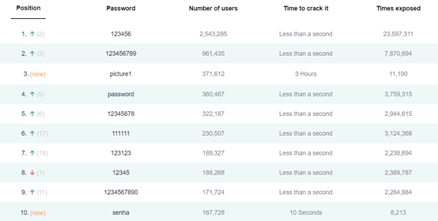

Password Management
In the information technology society, we cannot live without using various electronic devices every day. In addition, we are also dealing with another thing every day, which is our passwords. However, many people do not know how to set and manage their passwords safely, resulting in their account passwords being easily hacked, which can bring them some unnecessary trouble.

Source: Wiki commons
Do you know if the password you are using is secure? You may wish to guess together.
What is the most popular password every year since 2013? "Qwerty?", "666666?" or "password?" You may not expect that the most popular password is "123456 ". This is the password that comes to mind most easily. According to SplashData's analysis of millions of leaked passwords on the Internet: "123456" tops the list of the most popular passwords.
Source: Nordpass and SplashData’s Top 100 Worst Passwords of 2020
So how can you make your passwords less vulnerable to hackers and manage your passwords safely? Then you need to get to the root of the problem and set a few common passwords with a high-security factor. Some suggestions are given below.
- Use different passwords for important accounts
- Don't use personally important information or common words as passwords
- Password length as long as possible
- Use password management software
Use separate passwords for important accounts such as online banking or email. There is a risk of reusing passwords. If someone steals the password for one of your accounts, that person could gain access to your email, bank accounts and other important accounts.
Set a password that has nothing to do with personal information, for example, you can choose any word or phrase and then insert letters and numbers in the middle and at the end of the beginning to make it more difficult to guess. Do not just use simple words (such as "password"), keyboard patterns (such as “qwerty”), or it will be easy for anyone to guess.
Password try to keep more than 6-8 digits and should be composed of alphanumeric and symbols.
Using password management software can prevent your password from leaking, help you analyze your password security, and can modify the corresponding account according to the software's reminders. Commonly used password management software such as Bitwarden, 1Password, Dashlane, and Remembear , etc.
References
NordPass. (n.d.). top worst passwords chart. Retrieved September 24, 2021, from https://nordpass.com/most-common-passwords-list/
Wikipedia contributors. (n.d.). List of the most common passwords. Wikipedia. Retrieved September 24, 2021, from https://en.wikipedia.org/wiki/List_of_the_most_common_passwords
Martin, J. A. F. J. A. (2021, April 15). The password hall of shame (and 10 tips for better password security). CSO Online. https://www.csoonline.com/article/3526408/most-common-passwords.html